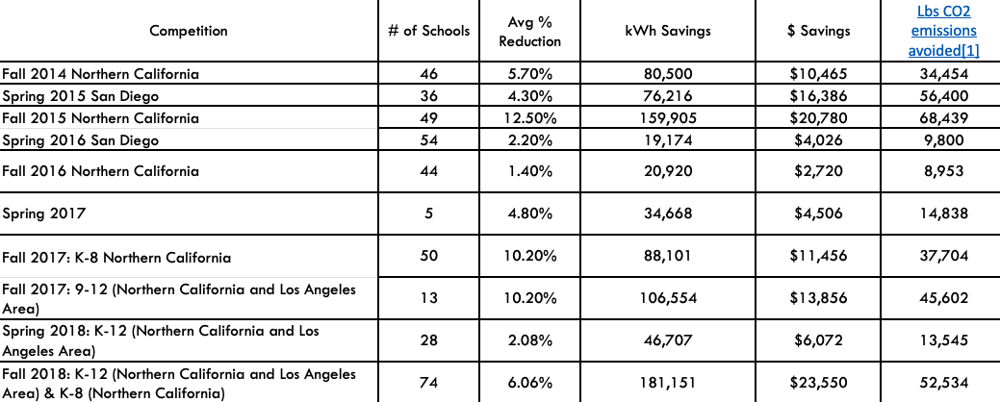

California’s Energy Conservation Competition
Participants in California’s Energy Conservation Competition work to change energy conservation behaviors in their schools relating to lighting, plug-loads, and mechanical systems. They also develop campaigns to encourage fellow students to communicate with teachers, peers, and administrators about energy conservation practices. This comprehensive program cuts school energy bills by 5% to 15%, and integrates climate education and energy efficiency, with linkages to hands-on job training and career development. Designated a Landmark case study in 2020.
Background
Note: To minimize site maintenance costs, all case studies on this site are written in the past tense, even if they are ongoing as is the case with this particular program.
Every year, California schools spend $700 million on energy. That’s about the same amount they spend on school supplies and materials. The Energy Conservation Competition addresses this issue by providing holistic services to engage, inspire, and empower K-12 students to reduce energy consumption at their schools resulting in cost savings and greenhouse gas emissions reductions.
The program was developed and implemented by non-profit SEI (see the Notes section for further details on SEI.)
Getting Informed
Through implementing energy conservation projects for 20 years in facilities ranging from apartment buildings to schools, SEI had developed a keen understanding of the benefits and barriers associated with individuals reducing their energy consumption. In addition to energy conservation expertise, the organization had years of experience working with K-12 teachers and school districts implementing project-based curriculum and providing in class instructional support. Its energy conservation expertise paired with experience working in K-12 education provided it with an understanding of individual and school wide opportunities and barriers to reducing energy consumption.
Prioritizing Audiences
The program’s priority audiences were K-12 students throughout the state of California.
Delivering the Program
Recruiting Teachers
SEI had developed relationships with area teachers and schools over a 20-year period. To recruit new teachers, it worked with county offices of education, districts, and other partners.
Energy Advisors, Instructional Planning and In-Class Instructional Support
Schools that registered for the Energy Conservation Competition received support from a dedicated SEI Energy Advisor. These Energy Advisors helped both teachers and student leaders to implement the Energy Conservation Competition, launch lessons and develop their campaign action plans. The Advisors provided instructional support and in-class instruction, developed teacher expertise about energy conservation, and made them more effective at supporting student’s behavior changes throughout the competition. The Energy Advisors were the experts for the school-wide energy reduction campaigns; they acted as advisors when questions or concerns came up from teachers, administrators, or students. This Energy Advisor support system reduced the knowledge barrier to achieving energy conservation behavior change. (Building Motivation, Engagement and Habits Over Time; Overcoming Specific Barriers)
Project-Based Classroom Curricula
Energy Education
The first step in changing behavior was building student understanding of energy uses, sources, and the connection between energy and climate. To increase student interest and buy-in, this discussion emphasized the environmental, financial, and health impacts to students, their schools, and their communities. For example, the lighting curriculum highlighted how health and focus were improved by sufficient lighting.
The program developed a wide range of climate solutions-focused curricula including ones designed specifically for teachers leading students through the Energy Conservation Competition. These curricula were ready-to-use and project-based, engaging students in sustainability projects and developing valuable career skills. The curricula were aligned with Common Core, California Career Technical Education, and Next Generation Science Standards.
There were three versions of the Energy Conservation Competition project-based curriculum, each designed for different student audiences: K-2, 3-5 and 6-12 students. The K-5 curriculum focused on introducing students to the concept of energy. Students who completed the lesson and activities were able to describe what energy is and distinguish between energy sources. Students in grades 3-5 conducted a plug-load audit to identify opportunities for energy savings. The 6-12 version of the Energy Conservation Competition launch lesson covered the fundamentals of energy and electricity, renewable and non-renewable energy sources, and led students through a hands-on lighting and plug-load audit. (Vivid, Personalized, Credible, Empowering Communication)
Conservation Action Planning
After learning about the fundamentals of energy, students conducted a light and plug-load audit.

Student from Harmony Magnet Academy conducts energy audit
They then created their energy conservation action plans. To teach students about action planning, SEI provided teachers with an Action Planning lesson. In the lesson students set a vision for their school, identified behavior changes that needed to happen to achieve their vision, and brainstormed ways to overcome those barriers. Then students used handouts to set a SMART goal for their campaigns (specific, measurable, achievable, relevant, time-bound). To empower students to overcome behavior change barriers, they were introduced to concepts in community-based social marketing. Finally, students created action plans and identified concrete next steps and timelines for all team efforts.
Each school submitted its energy conservation campaign materials to its Energy Advisor. The campaigns were then judged on creativity, effort, initiatives, student empowerment, and impact. Cash prizes are awarded to the top three high schools and K-8 schools that saved the most energy, and to the top three conservation campaigns at high schools and K-8 schools.

Student works on campaign poster
Competitions
Competitions focused attention on energy conservation and engaged students in learning related attitudes, knowledge and skills. Schools competed within two categories: (1) K-8 (elementary and middle schools) and (2) high schools.
In addition to using the Energy Conservation Competition model to empower student-led energy reduction campaigns on school campuses, the Energize Schools program utilized the campaign competition model in an annual Earth Day Campaign Contest. In the Energize Schools Earth Day Campaign Contest, students educated their peers on an environmental issue in order to motivate positive behavior change. The program provided support and resources for designing and implementing an effective campaign on energy, water, waste, or transportation at school. As one example, some students designed campaigns to reduce single-use plastics and employed multiple creative strategies, including conducting a waste audit and presenting to fellow students, the school board, and their City Council about the importance of the issue.
Teacher Training Webinar
Participating teachers were offered a launch webinar that helped them prepare to lead their energy conservation teams. The webinar prepared them to facilitate successful Energy Conservation campaigns at their schools. During the webinar, they were oriented to the goals and scope of the Competition, reviewed Competition curriculum and instructional resources, and received detailed training about how to conduct energy audits at their schools. The webinar also provided a platform for teachers to discuss solutions to anticipated barriers to behavior change at their schools.
Materials
SEI ensured that all teachers had access to light meters and watt meters to conduct lighting and plug-load audits in their classrooms and campuses. Light meters and watt meters could be borrowed from the Energy Advisors and were also promoted through mailings. High schools could buy them using a mini-grant program that provided teachers with up to $500 in project-based learning materials.
In addition to the access of light and watt meters, the Energy Conservation Competition provided the following resources to make it as easy as possible for teachers to participate with their students:
- SEI’s Energy Conservation Guide
- A weekend Shutdown Checklist to help school staff reduce utility use at school and contribute to their schools’ energy conservation campaigns
- Earth Tips to post on social media, school newsletters, or as a template for morning announcements
- Templates for door-hangers
1. encouraging a behavior (e.g. “we all have the power! Power-down when you leave.”) 2. recognizing a behavior (e.g. “Great job Energy Saver! Thanks for turning out your lights!)
Barriers
The following table summarizes the key barriers and how each was addressed.
|
Barrier
|
How it was addressed
|
|
Teachers already have too much on their plates to incorporate new material
|
· Provided instructional planning support to identify connections between the teachers existing projects
· Provided a flexible competition model that allows for scalable participation
|
|
Teachers’ unfamiliarity with energy auditing practices
|
· Provided instructional planning and in-class instructional support
· Provided a teacher training webinar
|
|
Student and teacher dissociation of energy use and environmental and financial impact
|
· Provided project-based curriculum to establish the connection between energy use and the environment and energy costs
· Empowered students to act and make changes in their community
|
|
Lack of understanding of the magnitude of energy use at the school sites
|
· Tracked and shared energy use data and percentage reduction results with administrators, teachers, and students
|

Campaign poster from Buhach High School
Financing the Program
Since 2014, school energy conservation competitions have been supported by California utility customers under the auspices of the California Public Utilities Commission. A portion of the Energize Schools program was funded by California utility ratepayers and administered by Pacific Gas and Electric Company, Southern California Edison Company, San Diego Gas & Electric Company and Southern California Gas Company under the auspices of the California Public Utilities Commission.
Measuring Achievements
To measure the impacts of the Energy Conservation Competition, the Energize Schools team first identified an individual at each school district who had access to energy data, then requested access and a release form, data sharing, and analysis. These barriers to data collection made it challenging to track long term impacts of the competition. Typically, the organizing team was only given permission to access school data for the three-week period of the competition and another three-week period prior to the competition that was used for a baseline comparison.
To normalize baseline data for weather, baseline data were collected from the three-week period prior to the competition, when the weather was similar to the projected weather for the competition dates.
In addition to this quantitative approach, anecdotal evidence was recorded to help capture some of the qualitative and otherwise undocumented program impacts.
Results
Quantitative Findings
During the fall 2018 competition, the top seventeen elementary schools reduced energy by 10-15% and the next ten reduced energy by 5-10%. The top four high schools reduced energy by 10-15% and the next eight reduced energy by 5-10%.

Impacts are higher on an annualized (rather than just three week) basis, assuming some retention of the behaviors and associated energy savings past each three-week period. Assuming that the behaviors and savings are retained after the three weeks at 30%, and a remaining school year of 27 weeks, the impacts on an annual basis may be an additional three times as high as stated (roughly 900,000 kWh in all.)
|
|
4 years*
|
Per year
|
|
kWh
|
908,095
|
227,024
|
|
$
|
132,391
|
33,098
|
|
Lb. of CO2
|
438,342
|
109,586
|
* fall 2014 to fall 2019
Qualitative Findings
Long-term changes in students’ habits, their ability to impact their families and friends, and what this could mean for their interest in (for example) climate activism, all have important but hard-to-measure longitudinal benefits.
The impact of the competition clearly extended beyond the classroom. Middle school teacher Patty Wynman said it best when she described the impact the competition had on her students. “Everywhere they go these students are the energy police, they laugh about it, they are shocked by it and they can’t stop thinking about saving energy once they have been in this competition. They have become energy efficient themselves and pass it to their families because they have seen the cost savings.”
Contacts
Jessica Redden
jessicaredden@seiinc.org
Notes
Lessons Learned
Involving students in the baseline energy audits, energy use competitions, action planning, and project- and curriculum-based deep-learning opportunities are great ways to engage students in energy conservation and becoming local champions.
The scope of each school's conservation campaigns varied depending on the capacity of participating student teams, resulting in a large variation in savings. Students were encouraged to design their own campaigns and address opportunities at their specific school site. Elementary school facilities had different energy demands than middle school and high school facilities. Typically, elementary schools had fewer classrooms and did not have stadiums, large gymnasiums, workshops with power tools, or pools. These types of facilities, which represent large energy demands, are typically found in high schools and sometimes middle schools. Therefore, elementary schools tended to see a higher relative reduction in energy use throughout the competitions because the teachers in those schools were able to directly affect a larger portion of the school’s energy use. Historically this difference was accounted for by having two competition brackets, K-8 and 9-12.
Notes
Between 2014 and 2020, the Energy Conservation Competition model was used to implement 10 conservation competitions engaging schools from across the state of California. It has been used at a K-12 schools indicating the versatility of the program in meeting a wide range of student and teacher needs. The Energy Conservation Competition processes and systems in place, from data collection to Energy Advisor roles, made this competition adaptable and replicable.
Replicability: This approach can be easily replicated in regions with different climates and political leanings. The curriculum’s technical content provides career-relevant experience in the energy auditing field - which is a need everywhere. Regional climate challenges can be addressed by timing the competition to avoid extreme weather. If the challenge is implemented during a particularly hot season, additional curriculum on HVAC (already available in SEI’s Energy Auditing Curriculum) can be added to the competition content. One challenge with expanding the competition beyond California is obtaining the energy data. Every utility has different ways of accessing energy data and policies for requesting the data.
Adaptability: This program emphasized energy conservation, but it could easily be modified to focus on any other sustainability behavior and to many other behaviors as well.
Facility Staff:Collecting schools’ energy use data was challenging. Data collection required identifying an individual at the school district that had access to energy data, requesting access and a release form, data sharing, and analysis. These barriers to data collection made it challenging to track long term impacts of the competition. Typically, the program only had permission to access school data for the three-week period of the competition and another three-week period prior to the competition that was used for a baseline comparison. It is critical that these “hard to reach" users be engaged early on in program planning, to ensure access to the required evaluation data.
SEI is a non-profit organization that was founded more than 20 years ago with the goal of supporting communities to transform the built environment to protect the climate. The organization has created sustainable communities through scalable programs and models. Energize Schools is one of four flagship programs that integrates climate education, training, and career development. SEI programs engage local talent to directly address their community’s sustainability goals by leading projects with measurable environmental, economic, and social benefits. The organization’s first projects engaged students in energy auditing and advising local businesses; they were the inception of SEI’s K-12 Energize Schools work. The organization’s team continues to develop and support innovative initiatives to create a sustainable world where communities thrive.
Landmark Designation
The program described in this case study was designated in 2020.
Designation as a Landmark (best practice) case study through our peer selection process recognizes programs and social marketing approaches considered to be among the most successful in the world. They are nominated both by our peer-selection panels and by Tools of Change staff and are then scored by the selection panels based on impact, innovation, replicability and adaptability.
The panel that designated this program consisted of:
- Arien Korteland, BC Hydro
- Kathy Kuntz, Kanndo Consulting
- Doug McKenzie-Mohr, McKenzie-Mohr Associates
- Sea Rotmann, Sustainable Energy Advice Ltd.
- Brian Smith and Lester Sapitula, Pacific Gas and Electric Company
- Reuven Sussman, American Council for an Energy-Efficient Economy
- Marsha Walton, New York Energy Research and Development Authority
This case study was compiled by Jay Kassirer in 2020, based on information provided by SEI and PG&E.